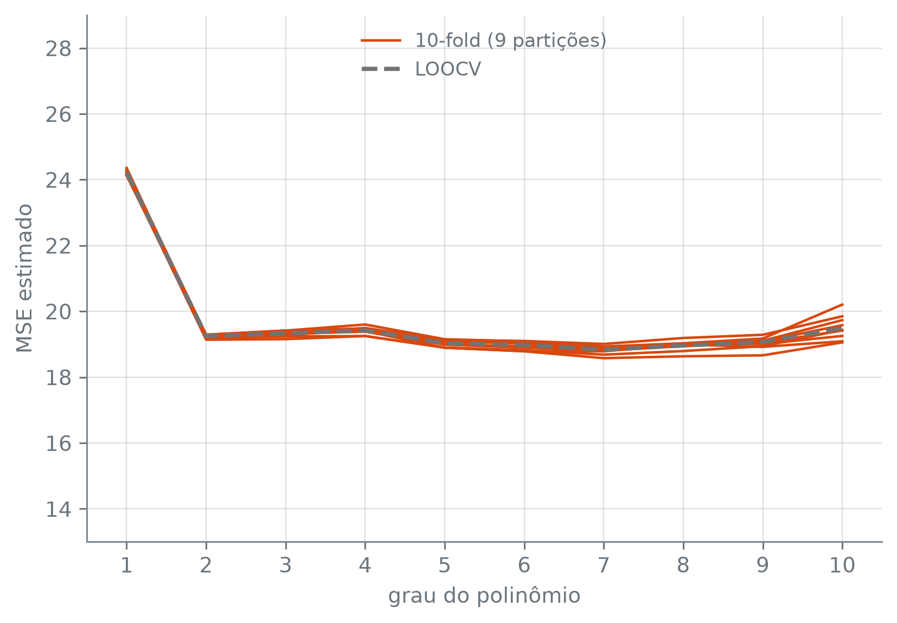

Esta seção corresponde à seção 5.1.3 de James et al. (2023).
Entre separar metade das observações uma vez e separar uma de cada vez \(n\) vezes há um meio-termo. Divide-se a tabela em alguns grupos, e cada grupo, na sua vez, fica de fora enquanto os outros ajustam o modelo.
A validação cruzada k-fold divide as \(n\) observações, ao acaso, em \(k\) grupos (em inglês, folds) de tamanho parecido. No passo \(i\), o grupo \(i\) é o conjunto de validação: o modelo é ajustado nos outros \(k-1\) grupos e o erro das previsões no grupo \(i\) é \(\mathrm{MSE}_i\). A estimativa do MSE de teste é a média dos \(k\) erros:
Figura 1: Os três esquemas de divisão com dez observações. Cada linha é um ajuste; azul é treino, laranja é validação. Conjunto de validação: um ajuste, metade das observações de fora. LOOCV: dez ajustes, uma observação de fora em cada. 5-fold: cinco ajustes, um quinto das observações de fora em cada.
ax.barh(y, width, left, height, color, align): desenha barras horizontais, uma para cada altura em y. Aqui, cada barra é uma célula de uma faixa.
width: o comprimento de cada barra; 0,9 deixa um espaço entre células vizinhas.
left: onde cada barra começa no eixo horizontal.
height: a espessura da barra; menor que 1, deixa um espaço entre as faixas.
color: uma cor por barra.
align="edge": a barra começa na altura y, em vez de se centrar nela.
ax.set_axis_off(): esconde os eixos, as marcas e a malha, e deixa só o que foi desenhado.
Patch(color, label): um retângulo de cor, usado aqui só para dar à legenda uma entrada por cor.
No conjunto de validação, cada observação está de um lado só. Na LOOCV e no 5-fold, toda observação passa uma vez pela validação e, em todos os outros ajustes, pelo treino. A diferença entre os dois está no número de linhas: \(n\) ajustes contra \(k\). Num 10-fold com \(n\) observações, quantas cada ajuste vê?
Esse número é o preço. Para regressão por mínimos quadrados, a fórmula da seção 10.2 faz a LOOCV com um ajuste só; para quase todos os outros métodos ela não existe, e a LOOCV exige mesmo os \(n\) ajustes. Com um método que demore para ajustar, ou com \(n\) grande, a diferença decide o que é viável.
O k-fold nos carros
A pergunta de trabalho continua a mesma: que grau de polinômio em potencia prevê melhor milhas_por_galao nos dados Auto? No scikit-learn, os grupos do k-fold saem de um KFold, que vai no argumento cv do cross_val_score.
KFold(n_splits, shuffle, random_state): o esquema de divisão do k-fold.
n_splits=10: o número de grupos, o \(k\).
shuffle=True: embaralha as linhas antes de cortar os grupos. Sem ele, o primeiro grupo são as primeiras linhas da tabela, o segundo as seguintes, e assim por diante.
random_state=10: a semente do embaralhamento.
Com 392 carros, a LOOCV do grau 1 custa 392 ajustes; o 10-fold custa 10. O erro estimado para a reta é 24,13.
O shuffle=True não é detalhe. A tabela Auto não está em ordem aleatória:
cv_grau_1_sem_embaralhar =-cross_val_score( modelo_polinomial(1), X, y, cv=KFold(10), scoring="neg_mean_squared_error").mean()bool(auto["ano"].is_monotonic_increasing), round(float(cv_grau_1_sem_embaralhar), 2)
(True, 27.44)
Os carros estão em ordem de ano, do mais antigo ao mais novo. Sem embaralhar, cada grupo é uma época, e o modelo que o julga foi ajustado quase só com carros de outros anos. O erro estimado da reta sobe de 24,13 para 27,44. A mesma coisa acontece com qualquer tabela ordenada por data, por cliente ou por região, e nenhum aviso aparece na tela. O que deveria mudar na conta se o objetivo fosse, de propósito, prever carros de anos que o modelo não viu?
Nove partições
O embaralhamento é um sorteio, e outra semente dá outros grupos. O 10-fold, repetido com as sementes de 10 a 18, dá nove curvas.
cv_nove = np.array([ [-cross_val_score( modelo_polinomial(grau), X, y, cv=KFold(10, shuffle=True, random_state=semente), scoring="neg_mean_squared_error", ).mean()for grau in graus ]for semente inrange(10, 19)])grau_minimo_por_particao = [int(graus[i]) for i in np.argmin(cv_nove, axis=1)]todas_escolhem_o_grau_7 =set(grau_minimo_por_particao) == {7}grau_minimo_por_particao, todas_escolhem_o_grau_7
([7, 7, 7, 7, 7, 7, 7, 7, 7], True)
todas_escolhem_o_grau_7 confirma que as nove partições apontam o mesmo grau de menor MSE estimado, o 7. Para comparar a dispersão com a do conjunto de validação, o chunk abaixo refaz as dez divisões ao meio da seção 10.1, com as mesmas sementes de 10 a 19, e mede a amplitude grau a grau nos dois esquemas: o maior MSE estimado menos o menor.
mse_dez_divisoes = []for semente inrange(10, 20): X_tr, X_va, y_tr, y_va = train_test_split(X, y, test_size=196, random_state=semente) mse_dez_divisoes.append([ mean_squared_error(y_va, modelo_polinomial(grau).fit(X_tr, y_tr).predict(X_va))for grau in graus ])mse_dez_divisoes = np.array(mse_dez_divisoes)amplitude_validacao = mse_dez_divisoes.max(axis=0) - mse_dez_divisoes.min(axis=0)amplitude_kfold = cv_nove.max(axis=0) - cv_nove.min(axis=0)pd.DataFrame( {"validação (10 divisões)": [round(float(v), 2) for v in amplitude_validacao],"10-fold (9 partições)": [round(float(v), 2) for v in amplitude_kfold], }, index=pd.Index(graus, name="grau"),)
kfold_menos_disperso_em_todos_os_graus confirma que, nos dez graus, as nove estimativas do 10-fold se espalham menos que as dez do conjunto de validação. No grau 2, a validação espalha 7,49 e o 10-fold, 0,15; no grau 10, 8,88 contra 1,15.
A curva da LOOCV, que não depende de sorteio, entra na figura para comparação:
fig, ax = plt.subplots(figsize=(6, 4.2))for linha in cv_nove: ax.plot(graus, linha, color="C1", linewidth=1.2)ax.plot([], [], color="C1", linewidth=1.2, label="10-fold (9 partições)")ax.plot(graus, loocv, color="0.45", linewidth=2, linestyle="--", label="LOOCV")ax.set_xlabel("grau do polinômio")ax.set_ylabel("MSE estimado")ax.set_xticks(list(graus))ax.set_xlim(0.5, 10.5)ax.set_ylim(13, 29)ax.legend(loc="upper center")plt.tight_layout()plt.show()

Figura 2: MSE estimado contra o grau do polinômio em potencia, nos dados Auto. As curvas laranja são o 10-fold com nove partições diferentes (sementes 10 a 18); a curva cinza tracejada é a LOOCV. O eixo vertical é o mesmo da figura do conjunto de validação, de 13 a 29.
O eixo vertical é o da figura da seção 10.1, e a diferença de dispersão entre as duas se vê sem ler números: lá, dez curvas em alturas bem diferentes; aqui, nove curvas quase sobrepostas. A LOOCV também tem o mínimo no grau 7, e loocv_dentro_das_nove confirma que, em todos os graus, ela fica entre a menor e a maior das nove estimativas do 10-fold. No 10-fold, todo carro é julgado uma vez, por um modelo ajustado com os outros nove décimos da tabela; trocar a partição muda só quais carros se juntam em cada grupo, e isso mexe pouco na média.
A validação cruzada contra o teste verdadeiro
Nos carros, não há como saber se a validação cruzada acertou: o MSE de teste verdadeiro é desconhecido. Com dado simulado, ele é conhecido, porque dá para sortear quantos pontos novos se quiser da mesma \(f\).
São três cenários. O primeiro é o da seção 7.6: \(f(x) = 4 + 0{,}3x + 3\sin x\), com ruído de desvio padrão 1,5. O segundo quase não tem curva; o terceiro tem uma curva mais apertada e pouco ruído. Em cada um, 100 pontos de treino, 20.000 de teste, polinômios de grau 1 a 10, e três curvas: o MSE de teste, a LOOCV e o 10-fold, as duas últimas calculadas só com os 100 pontos de treino.
arr.reshape(-1, 1): transforma um array de uma dimensão numa matriz de uma coluna, a forma que o fit espera para X. O -1 deixa o numpy calcular o número de linhas.
arr.ravel(): o caminho de volta, a matriz de uma coluna achatada num array de uma dimensão.
Figura 3: MSE de teste verdadeiro (azul), LOOCV (cinza tracejado) e 10-fold (laranja) contra o grau do polinômio, em três cenários simulados com 100 pontos de treino. O x marca o mínimo de cada curva. Cada painel tem a sua escala vertical.
A tabela resume o que a figura mostra: onde cai o mínimo de cada curva, e quanto se perde, em MSE de teste, por usar o grau que a validação cruzada escolheu em vez do grau que o teste escolheria.
nivel = {}for nome, c in curvas.items(): as_duas_abaixo = (c["LOOCV"] < c["teste"]) & (c["10-fold"] < c["teste"]) nivel[nome] = {"LOOCV acima": int(np.sum(c["LOOCV"] > c["teste"])),"10-fold acima": int(np.sum(c["10-fold"] > c["teste"])),"as duas abaixo": ", ".join(str(g) for g, b inzip(graus, as_duas_abaixo) if b),"maior distância": round(float(np.max(np.abs(c["10-fold"] - c["teste"]))), 2),"no grau": int(graus[np.argmax(np.abs(c["10-fold"] - c["teste"]))]), }pd.DataFrame.from_dict(nivel, orient="index")
LOOCV acima
10-fold acima
as duas abaixo
maior distância
no grau
seno
10
10
1.57
1
quase linear
10
10
0.18
4
curva forte, pouco ruído
2
2
1, 2, 3, 4, 6, 8, 9
0.45
1
As três primeiras colunas contam graus, de 1 a 10: em quantos cada curva de validação cruzada fica acima do teste, e em quais as duas ficam abaixo dele. As duas últimas dão a maior distância entre o 10-fold e o teste, e o grau em que ela acontece.
O nível das curvas de validação cruzada erra, e erra de jeitos diferentes. No cenário do seno, as duas ficam acima do teste nos dez graus, e o 10-fold chega a se afastar 1,57 dele, no grau 1. No cenário quase linear, também ficam acima nos dez graus, mas mais perto: a maior distância do 10-fold ao teste é 0,18. Na curva forte com pouco ruído, as duas ficam abaixo do teste nos graus 1 a 4, 6, 8 e 9, e a maior distância, 0,45, está no grau 1.
O ponto de mínimo erra pouco. No cenário quase linear e no da curva forte, as três curvas apontam o mesmo grau, e a perda é zero. No seno, o teste aponta o grau 8, a LOOCV o 9 e o 10-fold o 6; usar o grau da LOOCV custa 0,17 de MSE de teste, e o do 10-fold, 0,04, sobre um mínimo de 2,56.
São três amostras, e é isso o que três amostras mostram. Às vezes o que interessa é o valor do erro de teste, porque se quer saber quão bem um modelo vai prever; aí o nível importa, e ele pode errar para qualquer lado. Mas, para escolher entre modelos, o que interessa é onde está o mínimo, e para isso as curvas de validação cruzada serviram nos três cenários.
James, Gareth, Daniela Witten, Trevor Hastie, Robert Tibshirani, e Jonathan Taylor. 2023. An Introduction to Statistical Learning with Applications in Python. Springer.
![Três painéis lado a lado. No primeiro, 'seno', as três curvas caem de 6 a 8 no grau 1 para perto de 3 a partir do grau 4; as duas de validação cruzada ficam acima da azul em toda a faixa. No segundo, 'quase linear', as três curvas sobem devagar de cerca de 2,3 para cerca de 2,6, com as de validação cruzada um pouco acima da azul, e os três mínimos no grau 1. No terceiro, 'curva forte, pouco ruído', as três curvas caem de cerca de 4 nos graus baixos para menos de 0,5 a partir do grau 7, com as de validação cruzada abaixo da azul nos graus 1 a 4, 6, 8 e 9, e os três mínimos no grau 9.](03-validacao-cruzada-k-fold_files/figure-html/fig-cv-contra-teste-output-1.png)